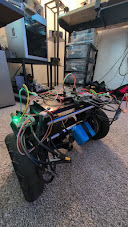
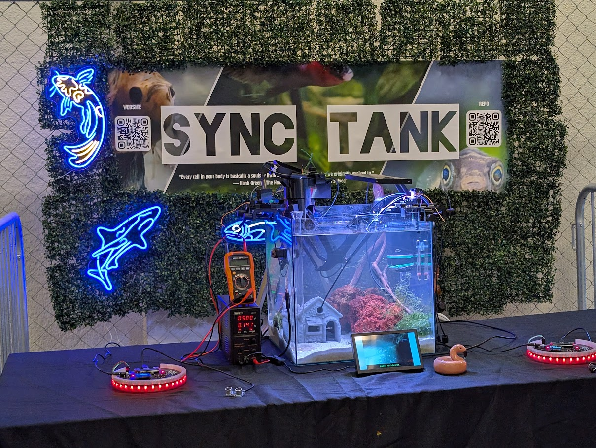
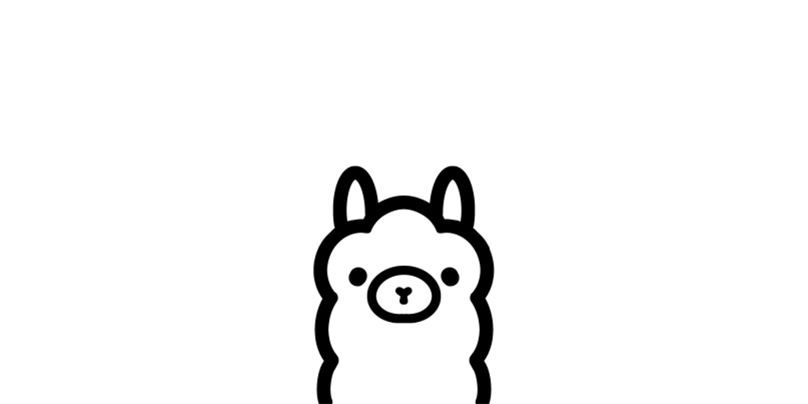
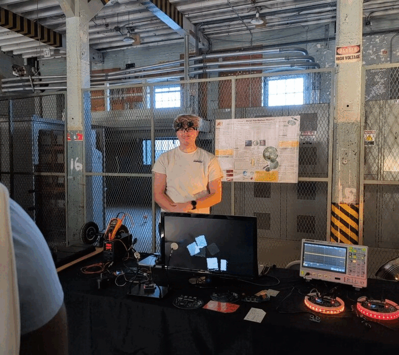
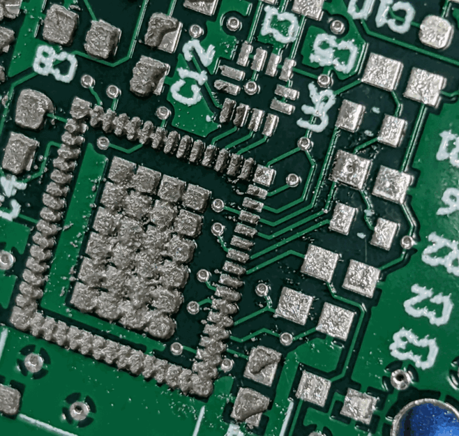
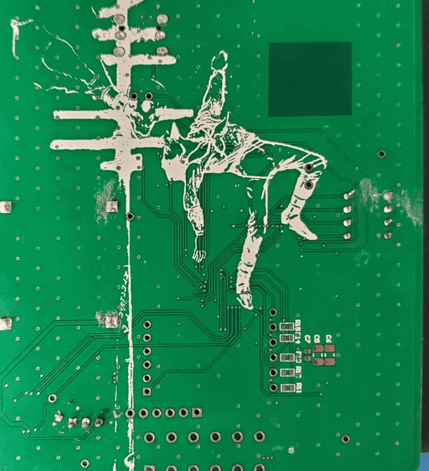
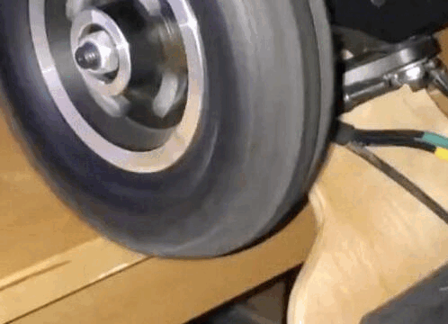

My Biggest FAN (Follow Anything Now)
May 2025 – Present
Cargo Carrying Automaton
FAN is a real-time object tracking and control system combining vision models with robotic actuation. Using lightweight hardware (like Raspberry Pi and microcontrollers) and state-of-the-art segmentation (SAM2, YOLOv8), FAN enables small robots to visually lock onto and follow selected objects or people, demonstrating portable visual intelligence without cloud dependency.

Sync Tank
January 2025 – Present
Open Source Aquaria
Sync Tank is a combined hardware-software system for monitoring small ecosystems, such as aquariums or terrariums. It uses AI models for environmental recognition and integrates with microcontrollers for monitoring. The system outputs actionable alerts and logs, aiming to bridge environmental sensing with autonomous enrichment.

The Cocktail Party
Sept 2024 – Present
Socio Studios
The Cocktail Party is an experimental social game platform exploring multi-agent communication using large language models. It simulates complex conversation dynamics, letting human players interact with AI agents in real time, focusing on information propagation, deception, and detection. Built in Unity, the project integrates LLM-based agents, live dialogue systems, and networked play.

Maker Faire 2024
Maker Faire 2024 was a celebration of creativity and innovation where I had the chance to present my projects and engage with a diverse community of creators. During the event, I showcased AGGRO, the aWear cardiac monitor, and the Feedback Loop, gathering invaluable insights from attendees. It was an incredible platform to connect with other engineers, gain inspiration, and contribute to the maker movement.

AGGRO
Sep 2022 - Jul 2024
Associated with University of Minnesota, Department of Electrical and Computer Engineering
AGGRO is a self-supervised, deep Q-learning robotic system designed for search tasks using modern semantic segmentation and object detection. The system is built on affordable, open-source robotic hardware, making it accessible for a wide range of applications. AGGRO has undergone both simulation and real-world training, demonstrating its capability in performing efficient and precise searches, particularly in cluttered environments.

Open Sauce 2024
Open Sauce was an exciting exhibitor showcase where I had the opportunity to interact with and learn from makers around the world. I participated in insightful discussions, observed key figures in the industry sharing their journeys, and learned about the challenges faced in both media creation and technical development. During the exhibition, I presented several of my recent projects, including the aWear Cardiac Monitor, The Feedback Loop homeostasis device, and AGGRO, among others. It was an invaluable experience for connecting with innovators and exchanging feedback.

aWear
Jan 2023 - May 2023
Associated with University of Minnesota
aWear is a versatile cardiac monitoring system offering real-time arrhythmia detection for users in all settings. The system provides an open-source hardware and software solution, featuring user-facing benefits along with onboard hardware responsible for real-time monitoring. It includes PPG sensors, an accelerometer, and external MMC flash storage, enabling extended monitoring use cases while improving battery life by reducing the need for continuous Bluetooth communication. The software seamlessly integrates with IoT-enabled devices and calendars, providing users with real-time alerts and insights into their cardiac health.

Freya Infotainment & Gaia Telematics
Sep 2021 - Jun 2022
Associated with University of Minnesota
As part of the University of Minnesota Solar Vehicle Project, I contributed to the design and implementation of vehicle telemetry and control systems, while also serving as a driver in competitions. My responsibilities included firmware development, PCB design, and real-time telemetry communication. These efforts supported the team during the Formula Sun Grand Prix (FSGP) and American Solar Challenge 2022, showcasing our commitment to pushing the boundaries of solar-powered transportation.

The Feedback Loop
Mar 2022 - Mar 2023
Associated with University of Minnesota
The Feedback Loop is an educational tool that gamifies the body’s homeostasis processes, making biology interactive and engaging. Through both software and hardware, the device demonstrates various feedback systems in the body, such as temperature regulation (thermostat knob) and PID loops in muscles (flex sensors), all controlled by the neurological system (microprocessor). This hands-on approach showcases how biology can be taught as a series of dynamic feedback systems, encouraging deeper understanding through interactive learning.

Electric Mountain Board
Jun 2021 - Jun 2022
This project involved the construction, testing, and enjoyment of an electric mountain board built from components. It features a 12S4P battery, delivering 120-150W per motor, using a LaCroix 60D+ for power distribution. After bench testing and tuning with VESC, the board was optimized for performance, and it remains in use to this day.